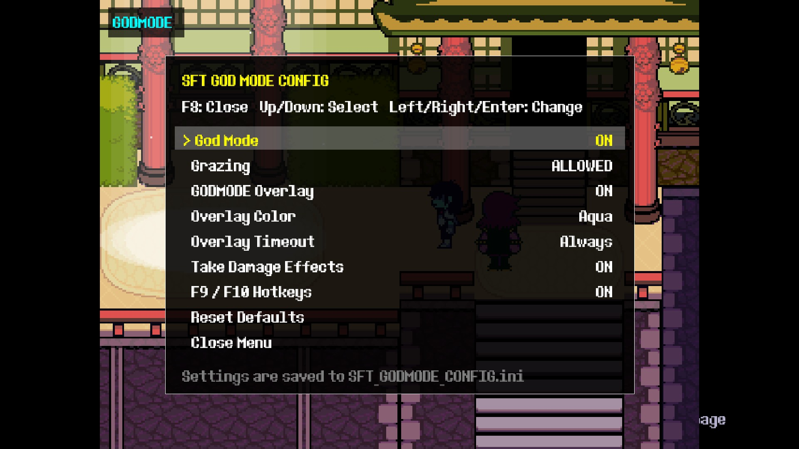

v2Chapters 1-5UMT CSX
DELTARUNE God Mode v2
Toggle God Mode at any time, control grazing, customize the GODMODE overlay, choose whether normal hit effects are shown, and change everything from an in-game configuration menu.
A fan-made collection of SFT DELTARUNE UMT mods, complete with direct downloads, detailed installation guides, screenshots, controls, compatibility notes, and safety warnings.
Everything here is unofficial and intended for modding, debugging, or practice. Make backups before installing anything.

Toggle God Mode at any time, control grazing, customize the GODMODE overlay, choose whether normal hit effects are shown, and change everything from an in-game configuration menu.
A complete debug menu with room tools, movement helpers, visual tools, a sound test, sprite viewer, Runtime Logger, GML viewer support, object spawning, and persistent settings.
The older debug menu build remains available for old setups, comparison testing, or anyone who prefers its original interface.
Adds a Settings option to the DELTARUNE Chapter Select screen so global settings can live in one cleaner place.
Adds a Settings option to normal chapter save-file select screens.
BIG WARNING: This mod is highly unstable and unsafe in testing. It can break saves and may cause save-file corruption.
Keep clean copies of every chapter data file and back up your DELTARUNE save folder before testing mods. God Mode v2 must be installed on clean chapter data, not on top of God Mode v1.